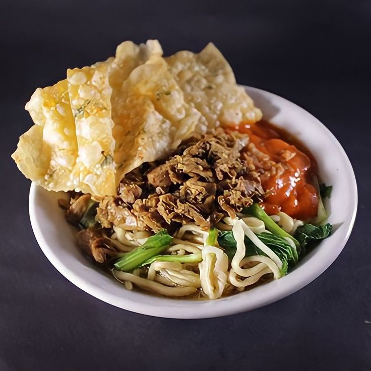

back
Mie Ayam

Chicken noodles, or Mie Ayam, is a popular Indonesian street food dish consisting of egg noodles topped with seasoned chicken, vegetables, and savory sauces. It is a comforting and flavorful meal enjoyed throughout Indonesia.
Ingredients:
- 200 g egg noodles
- 150 g chicken breast, diced
- 2 cloves garlic, minced
- 1 green onion, sliced
- 1 cup bok choy or green vegetables
- 1 tablespoon sweet soy sauce
- 1 tablespoon soy sauce
- 1/2 teaspoon salt
- 1/4 teaspoon black pepper
- 2 tablespoons cooking oil
- 2 cups chicken broth
Tools:
- pot
- frying pan
- Spatula
- Knife
- Cutting board
- Bowl
Steps:
- Bring a pot of water to a boil and cook the egg noodles according to the package instructions.
- In a wok or frying pan, heat the cooking oil over medium heat.
- Sauté the minced garlic until fragrant.
- Add the diced chicken and cook until fully done.
- Stir in the sweet soy sauce, soy sauce, salt, and black pepper.
- Cook for another 2 to 3 minutes until the chicken is well coated with the seasonings.
- Blanch the bok choy in boiling water for about 1 minute, then drain.
- Place the cooked noodles in a serving bowl.
- Top the noodles with the seasoned chicken and bok choy.
- Pour the hot chicken broth into the bowl or serve it on the side.
- Garnish with sliced green onions and serve immediately.